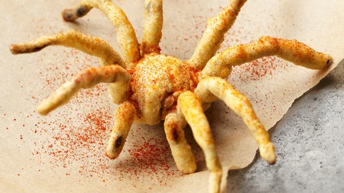

Recipe
Fried Tarantulas

Description
Creepy-crawly insides
Ingredients
Steps
- Spray spider with oil
- Crush cornflakes
- Put spider in cornflakes (note, this will be easier if you are working with a dead spider)
- Drop in fryer filled with oil
- Take out when crisp
- Serve to guests and scar them for life